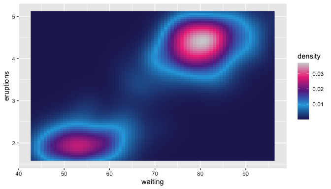
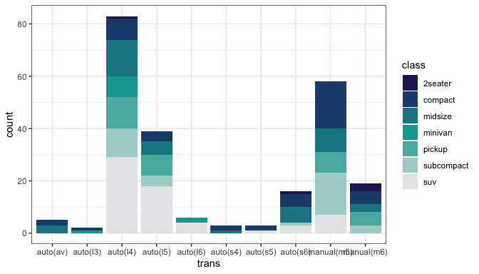
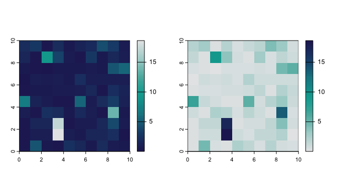
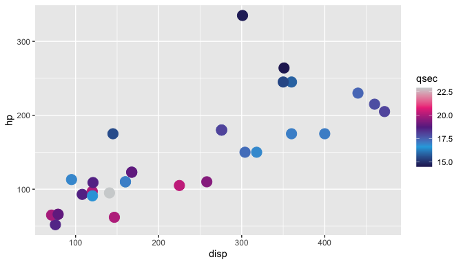

Palettes based on the colour schemes for IDEM, IDDU, and ACEFA
Installation
You can install the development version of idpalette from GitHub with:
# install.packages("devtools")
devtools::install_github("idem-lab/idpalette")Python friend
There is a python version of idpalette also on GotHyb by Rob Moss:
Using idpalette
The function idpalette takes arguments:
-
p, the palette, i.e.,"idem","iddu", or"acefa", and -
n, number of colours needed.
These can also be accessed by alias functions for each palette: idem(n), iddu(n), and acefa(n)
If n is not specified, the default is the number of colours in the true base palette, i.e., 7 for IDEM, and 5 for IDDU and ACEFA.
Usage per above calls palettes based on the colours in the group logos. There are also “official” versions of the palettes, which contain only the four colours specifically selected for use by the graphic design team.


Your colours your way
As many or as few colours as you want, forwards or backwards.
idpalette("iddu", 20)
idpalette("acefa", 2)
idem(10, rev = TRUE)Have a go ya mug
library(ggplot2)
ggplot(
faithfuld,
aes(waiting, eruptions)
) +
geom_raster(
aes(fill = density)
) +
scale_fill_gradientn(
colours = idpalette("iddu", 100)
)
ggplot(mpg) +
geom_bar(
aes(
x = trans,
fill = class
)
) +
scale_fill_manual(values = idpalette("idem")) +
theme_bw()
Works with terra plotting:
r <- example_raster(seed = 20240802)
par(mfcol = c(1, 2))
plot(
r,
col = idem(100)
)
plot(
r,
col = idem(100, rev = TRUE)
)
Sometimes ggplot2 won’t play nicely being fed a vector of values for continuous scales, so scale_id_continuous allows idpalette or any arbitrary vector of colours to be used:
library(ggplot2)
ggplot(mtcars) +
geom_point(
aes(
x = disp,
y = hp,
colour = qsec
),
size = 5
) +
scale_id_continuous(
cols = iddu(),
aesthetics = "colour"
)